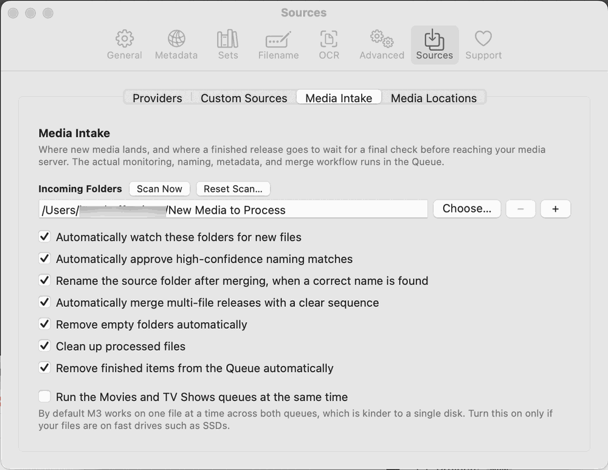
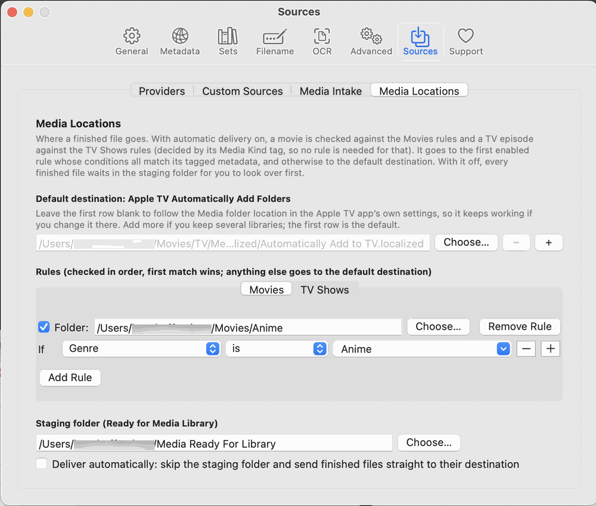
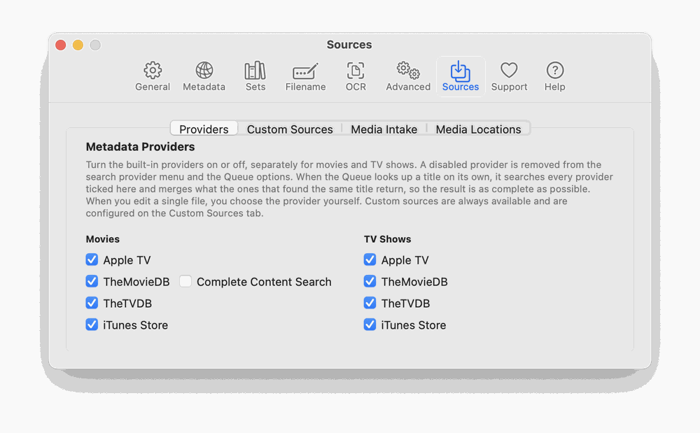

Choose Media Metadata Manager → Settings… and open the Sources tab, then the Media Intake sub-tab.
Under Incoming Folders, click + and choose the folder where your downloads finish. You can add several.
Open the Media Locations sub-tab and, under Staging folder (Ready for Media Library), click Choose… and pick the folder where finished files should wait for you to check them. Leave Deliver automatically off until you trust the results. (Later you can add rules there to send, for example, documentaries or a rating to a different folder, and turn automatic delivery on; movies and TV shows have separate rules, and the default destination is the Apple TV Automatically Add folder, followed from the Apple TV app’s own settings.)
Leave the other options at their defaults for now. Every option is off or conservative by default, so nothing happens behind your back.
Still in Settings, open Sources → Providers and make sure the metadata providers you want are ticked for Movies and TV Shows.

Settings > Sources > Media Intake.

Settings > Sources > Media Locations.

Settings > Sources > Providers.
Tip: Hover over any option in the Media Intake tab for a plain-language explanation of what it does.